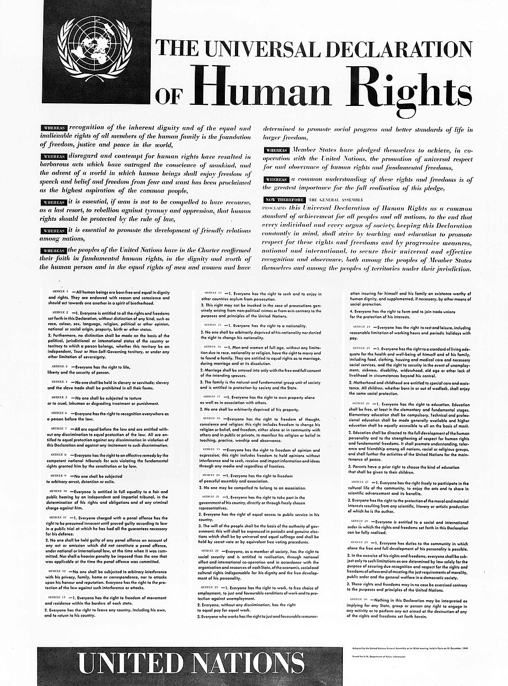

El mundo firma los derechos del hombre: treinta artículos para que no vuelva a repetirse
En el Palais de Chaillot, la Asamblea aprobó la Declaración Universal de Derechos Humanos: cuarenta y ocho votos a favor, ocho abstenciones y ninguno en contra. Tres años después de los hornos, el género humano pone por escrito lo que jamás debió necesitar escribirse.

Pasada la medianoche en el Palais de Chaillot, con las lámparas todavía encendidas sobre una asamblea rendida de cansancio, el presidente de la sesión anunció el resultado: cuarenta y ocho naciones a favor, ocho abstenciones, ninguna en contra. Acababa de aprobarse la Declaración Universal de Derechos Humanos, treinta artículos que proclaman que todos los seres humanos nacen libres e iguales en dignidad y derechos. La delegada norteamericana Eleanor Roosevelt, viuda del presidente y alma de la comisión redactora, recibió una ovación de pie que tardó en apagarse. Por una vez los aplausos no celebraban una victoria de las armas, sino un acuerdo sobre aquello que ningún ejército debería tener el poder de quitar.
El documento nace de una herida todavía abierta. Hace apenas tres años que el mundo descubrió, al abrir las alambradas de Europa, hasta dónde podía descender un Estado moderno contra los suyos y contra los ajenos; y hace tres que este diario relató el fin de aquella guerra bajo un hongo de fuego en el Japón. De esa doble certeza —que el hombre es capaz de fabricar tanto el campo de exterminio como la bomba— surgió en las jóvenes Naciones Unidas la convicción de que la paz necesitaba algo más que fronteras: necesitaba una lista, escrita y universal, de lo que a ningún ser humano puede hacérsele en nombre de nada.
Redactarla llevó dos años de discusiones que cruzaron todos los meridianos. La comisión, presidida por la señora Roosevelt, reunió a un jurista libanés, a un filósofo chino, a un delegado francés y a voces de todos los continentes, y hubo que conciliar tradiciones que rara vez se sientan a la misma mesa. Se convino no fundar los derechos en ninguna religión ni en ninguna filosofía en particular, para que todos pudieran suscribirlos; se debatió cada palabra, desde la libertad de conciencia hasta el derecho al trabajo y al descanso. El texto no obliga como una ley ni prevé castigo alguno: es una proclamación, un ideal común que los pueblos se comprometen a perseguir.
Las abstenciones dibujan el mapa de las reticencias del siglo. Se apartaron del voto la Unión Soviética y sus aliados, que objetaban el silencio del texto sobre los deberes hacia el Estado; la Arabia Saudita, incómoda con la libertad de cambiar de religión; y la Sudáfrica que acaba de instaurar por ley la separación de las razas, para la cual la igualdad proclamada sonaba a acusación. Cuentan los cronistas de la sala que la señora Roosevelt, interrogada sobre qué fuerza podía tener un papel sin gendarmes que lo hicieran cumplir, respondió que su poder no estaría en los tribunales sino en las conciencias, y que un pueblo que conoce sus derechos es mucho más difícil de esclavizar.
Queda por ver cuánto pesa una hoja de papel frente a los ejércitos y las razones de Estado, y no faltará quien la juzgue letra muerta antes de que se seque la tinta. Pero hay documentos que valen menos por lo que obligan que por lo que autorizan: a partir de hoy, cualquier hombre humillado en cualquier rincón del planeta podrá señalar un texto firmado por casi todas las naciones y decir que le asiste un derecho, y no un favor. Tres años después de los hornos y de la bomba, el género humano se ha puesto de acuerdo, al menos sobre el papel, en aquello que nunca más quiere volver a ver.